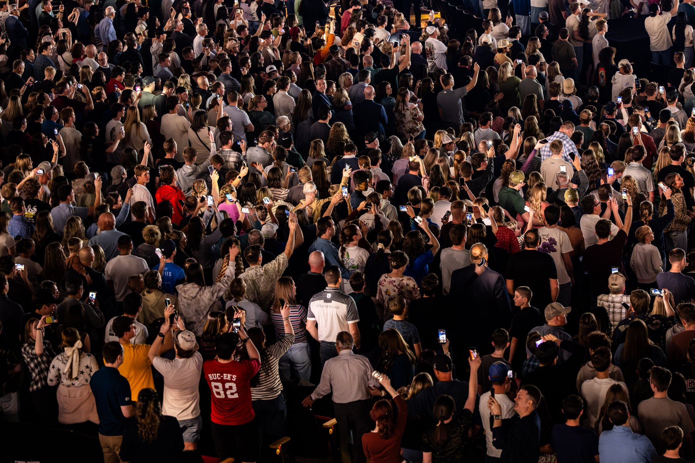
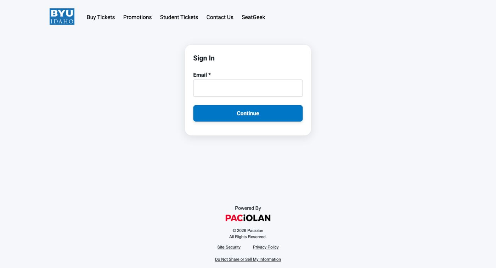
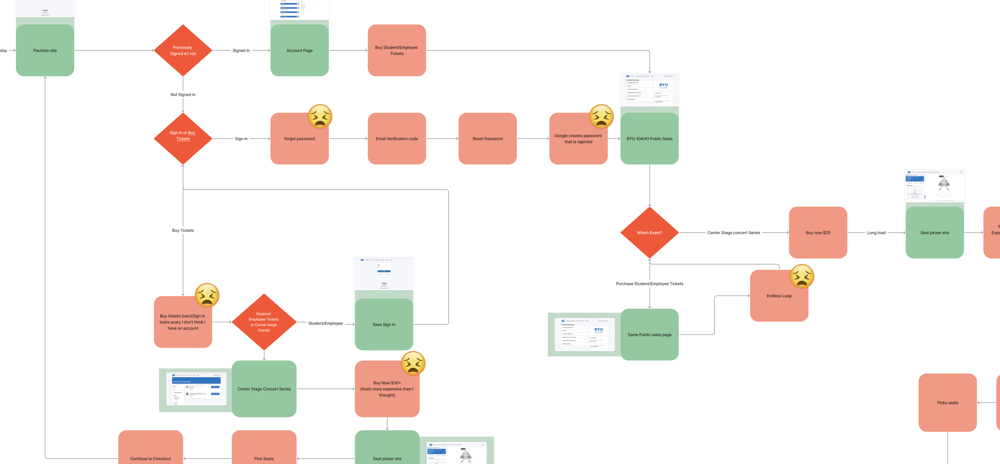
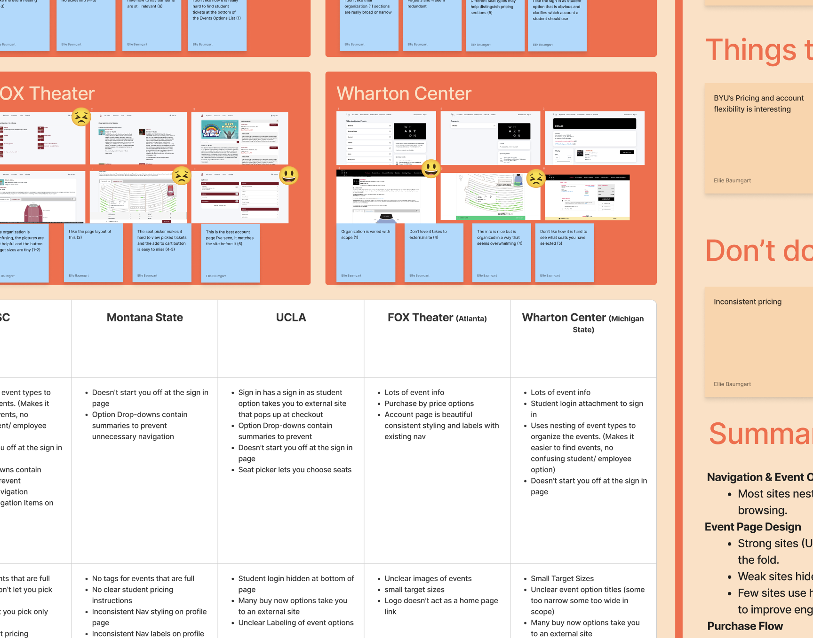
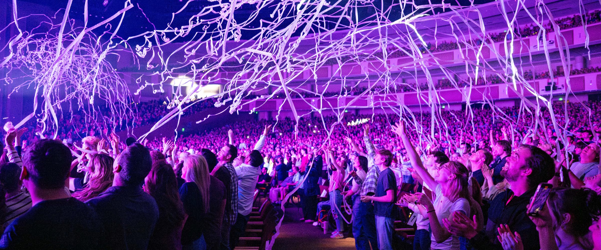
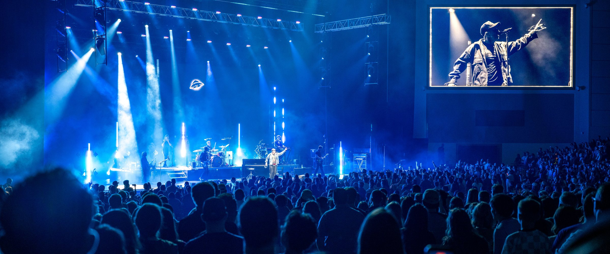
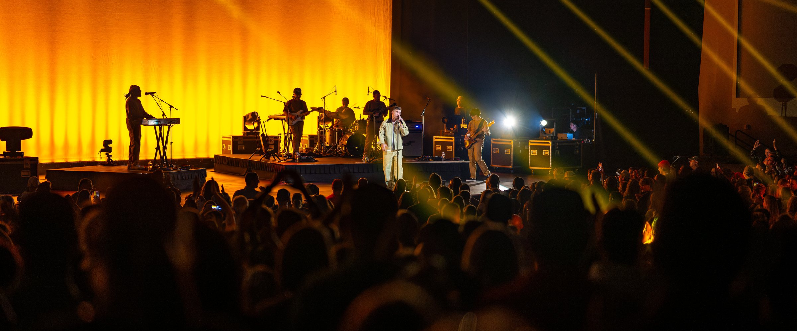
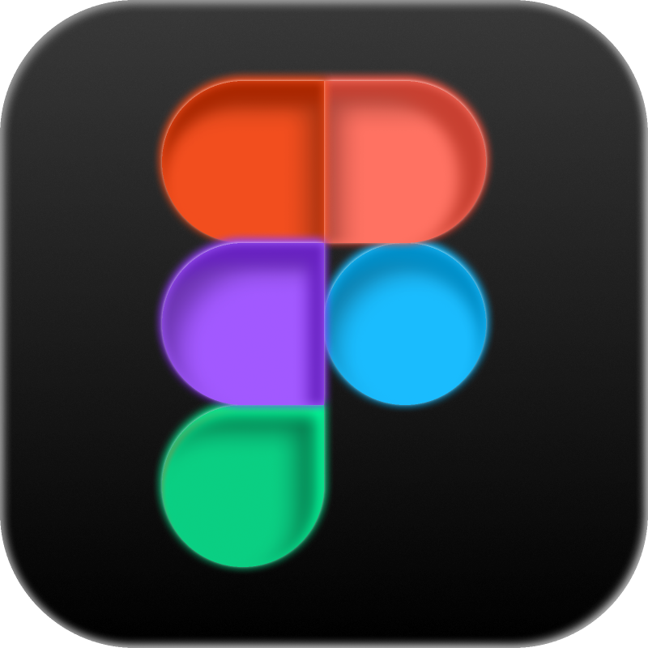
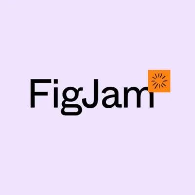

Buying tickets at BYU-Idaho is confusing and hard. I led the research to find out exactly where the experience broke down, and built the validated case for fixing it.
Role
Lead UX Researcher
Team
5 Stakeholders
Duration
3–4 Months
Industry
Higher Ed / Ticketing
Reach
25,000+ Students & Community
The Problem
Two audiences. One broken experience.
The BYU-Idaho Ticket Office serves two very different audiences: students and members of the community. From weekly roller-skating to a OneRepublic concert, the website is the starting point for every event. However, for some users, the most memorable part of the process isn't the event they are attending; it's the overly complicated ticket purchasing process.

OneRepublic, March 2026. A single major event like this can draw 5,000–14,000 attendees — all funneled through the same broken purchase flow.

The current sign-in screen — no indication of which email to use, student or otherwise.
Ellie is researching
Discover
Four methods, one full picture
Instead of relying on assumptions, I organized and led 11 rounds of research across four complementary methods to understand the ticket-buying experience from multiple angles. Each method answered a different question, helping distinguish isolated frustrations from recurring usability issues.
86
Participants
👩💻
11
Rounds of Testing
📋Click to reveal
4
Research Methods
🧪Click to reveal
6
Competitor Platforms
💻Click to reveal
EExplore, drag elements, and research along with me!

Here is a small piece of the original flow mapped out. Each frustrated face marks a point where a student got stuck, including a forgot-password loop and a seat-picker dead end.

Competitive analysis across six ticketing systems. This was crucial when working within the existing Paciolan system. From this research, we learned about the opportunity to implement SSO, which was a game changer!
Ethis was the real unlock — SSO fixed so much 👀
Usability Testing — observed where students and community members hesitated, backtracked, or got stuck.
Tree Testing — validated whether a reorganized event category structure matched students' mental models.
A/B Testing — two staggered rounds, comparing direct-linked vs. multi-step flows, then browse-first vs. checkout-first.
Market Research — competitive analysis of six university and venue ticketing systems.
Define
Four friction points in the way of a ticket
Across every method, the same four pain points kept surfacing. Feel free to take a sneak peek at some of my findings!
Issue 01
Authentication Barriers
11 of 12 students couldn't log in with confidence.
The login screen offered no context, no account option, and no clue whether to use a BYU-Idaho or personal email. Five students even landed in the public purchasing flow by accident, paying community prices instead of student prices.
Issue 02
Confusing Event Categories
10 of 11 students expected "Center Stage" to live under Performing Arts. It didn't.
Internal labels meant nothing to students, who had to scroll long, repetitive lists to find events. Renaming categories in plain language fixed it — retesting showed zero hesitation.
I could see it being in a lot of these categories.
Peyton, Sophomore
Issue 03
Seat Selection Challenges
Half of the students and 4 in 10 had issues picking their seat.
Section-based seating left students unsure they'd sit together, and worried community members with accessibility needs. They expected to pick an individual seat, not just a section.
It just gives me a section... if I wanted to do it with friends, that would be stupid.
Carter, Sophomore
Issue 04
An Overly Lengthy Purchase Process
10 of 10 students preferred a direct-linked flow over the multi-step default.
The existing flow forced everyone through multiple repetitive pages. A streamlined, direct path to checkout felt faster to every single participant.
I just want the ticket as fast as possible.
Kate
Design
Four fixes, each traced straight back to the data
A list of fixes all backed up by the user's experiences and research.
01
Single Sign-On
Authenticate once with existing BYU-Idaho credentials, and stay signed in across myBYUI and the Ticket Office.
02
Reorganized Categories
Nest events around students' real mental models, not internal branding, with descriptive subcategory labels.
03
Direct Seat Selection
Visible seat numbers, instant confirmation, and a Student / Public pricing toggle on the same seat.
04
Deep Linking
Go straight from event discovery to the ticket page — no homepage, no detour — with login moved to the end.
The Ideal Flow
To make this tangible for stakeholders, I built an end-to-end clickable prototype they could use to experience the difference.
BeforeThe current flow for a full concert on sale: homepage → category guesswork → event list → section-based seat map → checkout. Six-plus steps, several of them dead ends.AfterThe redesigned flow: deep link → specific seat choice → sign in → checkout. Four steps, no detours.
Additional Recommendations
Add a favicon and refine the logo for trust and credibility
Add brief menu descriptions to reduce navigation uncertainty
Clarify ticket access instructions post-purchase
Create a consistent profile / account page
Remove the redundant "Get Tickets Today" button, which dead-ends community members
Impact
The projected impact
As the recommendations are still pending implementation, these are estimates based on the results in the data above.
Login
92%→~0%
of students struggling to log in
Seat selection
40–50%→~20–25%
of users picking the wrong seat
Category confusion
91%→5%
of students confused about ticket categories
Checkout speed
Fewer steps, faster completion
Estimated revenue recovery
$4.1K–$11.6Kper major event
Based on measured login friction and abandonment across a typical major event.
Bbyui.ticketoffice

Bbyui.ticketoffice

Bbyui.ticketoffice

Most importantly a better experience for students and community members
Toolkit
What I used to get here
The tools behind the research, synthesis, and writing.

Figma
Prototyping the redesigned ticket flow and mocking up before/after screens.

FigJam
Synthesizing raw research notes and mapping the four friction points.
ChatGPT
Drafting interview scripts and stress-testing survey wording.
Claude
Structuring findings and shaping this case study's narrative.
Reflection
What this project taught me
This project was different from what a lot of people consider UX work. Instead of designing interfaces, I had to work within an existing system, problem-solve, and recommend fixes that were practical and realistic. The most valuable deliverables I could provide weren't beautiful loading screens or interactions — it was data and insights gained from boots-on-the-ground research and testing.
Because I was the only researcher on this project, that meant taking full responsibility for research rigor: designing unbiased test structures, synthesizing findings across four different methods, and delivering real solutions to stakeholders based on my findings.
The research and recommendations have been delivered and are pending implementation. If adopted, I'd expect faster checkout completion, fewer abandoned purchases during seat selection, and far less demand on in-person resources when things go wrong.